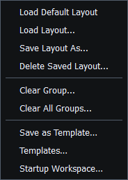
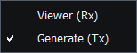
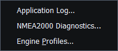
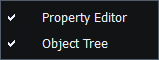
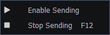
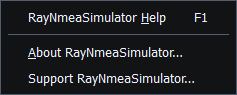

Use the shortcuts displayed by your build and platform. The most important safety shortcut is F12; Help's reading shortcuts do not replace it.
| Shortcut/control | Action |
|---|---|
| F1 / platform HelpContents | Open Help; Property Editor, Object Tree and Setup provide related context |
| F12 | Stop external Sending and revoke pending bounded discovery/route operations |
| Ctrl+F / platform Find in Help | Focus Search Help and select its current text |
| Alt+Left / Alt+Right in Help | Back / Forward article history |
| Escape | Close Help/image inspector or cancel the focused dialog according to its controls |
| Ctrl+0 / Ctrl+1 in image inspector | Fit / 100% |
| Platform Zoom In / Zoom Out | Adjust the enlarged image scale |
| Tab / Shift+Tab | Move among normal controls; tree arrows navigate contents |
| F2 in the detailed Template table | Edit a supported saved-value cell |
Enter commits a valid supported numeric edit. Focus loss also completes applicable instrument edits; an invalid commit restores the current model value. Save/OK in a document editor is different from pressing Enter in an individual numeric field. Inspect dialog buttons before assuming a draft has been written.
In modal confirmations, F12 remains a Stop action and does not mean Yes/Accept. Do not use Escape or close a configuration window as a substitute for verifying stopped transport state. Prefer the explicit Stop Sending command when operating by mouse.
In Help, Ctrl+F focuses Search Help. Type a phrase to filter topics, then press Enter to open the selected match or first result. Enter keeps Help open; Escape closes it.

Figure 28. Layout menu commands and available shortcuts. Click to enlarge.

Figure 29. Mode menu commands and available shortcuts. Click to enlarge.

Figure 30. Tools menu commands and available shortcuts. Click to enlarge.

Figure 31. View menu commands and available shortcuts. Click to enlarge.

Figure 32. Transmission menu commands and available shortcuts. Click to enlarge.

Figure 33. Help menu commands and available shortcuts. Click to enlarge.
Main Window · Instruments and Generators · Layout Management · Templates · Property Editor · Object Tree · Themes and Appearance · Connection Troubleshooting · Enable, Dispatch and Sending · Route Overview · Engineering Units